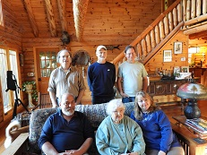
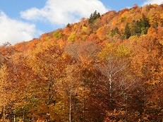
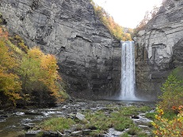
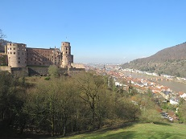
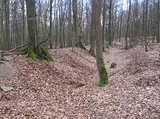
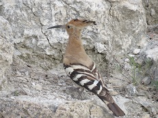
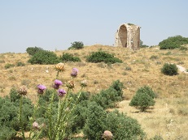
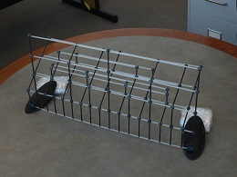
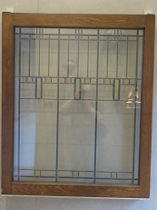
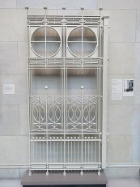

Hi, everyone,
Mark and I hope that the year 2019 went well for you, and wish you the best for the coming year.
The second half of this year has been rather different from usual for the two of us, because we were on sabbatical this fall (and will continue to be on sabbatical in the coming spring). We spent four months living and working in Princeton, NJ in the summer and fall, followed by several more weeks in October in New York state and New England, and we are now back in Lincoln.
We enjoyed our time in the eastern US very much. In our work we got to collaborate with new colleagues as well as pursuing new projects with previous coauthors, both fun experiences. On the weekends and in late October we used the opportunity to visit friends who live in the northeast - John, Louis, and Susan who we've known from grad school days, Paul who we've known nearly as long, and Maranda, Nick, Tim, and Zoran from our time at UNL. In August we returned to Lincoln for a weekend to participate in the graduation hooding ceremony with our student Katie. In October we drove through New England, and then to Ithaca, to see the fall color, hike, and birdwatch. During our months in the northeast, we also got to spend a lot of time with Mark's family, visiting his mother and sister in Poughkeepsie, and other siblings and more extended family in Tarrytown and the Catskills. In October there was a particularly moving event, when Mark and all of his siblings, along with their mother (as well as their partners/spouses, and some of their children), were all in the same place for the first time in nearly 10 years.
|  |
|  |  |
In the first half of the year we traveled to Germany and Israel for research conferences, and fit in several days of sightseeing in both countries as well. We got to combine two of our very favorite vacation activities - hiking/birdwatching and seeing historical sites. In Germany we walked on the "philosophers walk" in Heidelberg and along the remains of the "limes" - the earthwork wall built by the Romans marking the northern boundary of their empire. In Israel we found a hoopoe making his own excavations in the ruins of the Roman port city of Caesarea, and hiked past a Byzantine church (rebuilt by Crusaders) above the remains of a much more ancient civilization at Maresha/Beit Guvrin.
|  |  |
|  |  |
When I go through the year's pictures each December in order to put this page together, I often like to look for patterns and similarities in disparate places. This year, one thing that struck me also definitely shows my math-geeky tendencies: One of our former PhD students, Nick, created and 3D-printed a model of the Cayley graph of the group BS(1,2) (and brought it to me in his luggage all the way from Japan!). When Mark and I went to the Art Institute of Chicago with my brother Tom and sister-in-law Dawn, I found that two architectural objects designed by Frank Lloyd Wright (a window and a gate) have very similar properties, doubling the number of vertical line segments in each successive layer. (The photographer reflected in the window is Mark.)
|  |
|  |  |
Happy holidays and new year to all of you! Mark and I hope you've had a good year in 2019, wish you the very best for 2020.
Susan